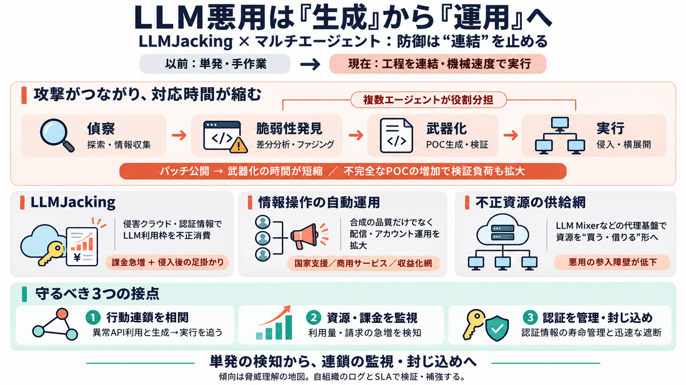

Cybersecurity News - WIU Cybersecurity Center - WIU
Google on Monday revealed that adversarial use of artificial intelligence (AI) by threat actors has gone beyond manual p…

生成AI（LLM）悪用は「作る」だけでなく「運用」へ進み、侵入の連結と機械速度での実行が加速しています。
用語：LLMJacking＝侵害クラウド/認証情報でLLMの利用枠を不正消費（不正課金・足掛かり）。エージェント＝自律タスク、マルチエージェント＝複数役割の協調。
生成AI悪用が探索段階に留まらず、攻撃パイプラインとして運用される方向に進んでいます。
偵察→脆弱性発見→武器化→実行を、マルチエージェントでつなげることで「連鎖（chain）」が高速になります。
脆弱性研究にLLMとエージェントが入り、パッチ差分分析やプロトコルファジング、POC武器化が人手なしで繋がるケースが観測されています。
IO（information operations）は、合成メディアの質だけでなく、配信・アカウント運用・配下パイプラインまでを自動化して規模と持続性を上げる点が価値になります。
IOは国家支援勢力に加え、商用のInfluence-as-a-Service（IaaS）や不正な政治的収益化（IPM）ネットワークでも拡大しています。
金銭目的では、侵害したクラウドとLLM資源を奪うLLMJackingが継続し、使用量・課金が短時間で急増する実例が述べられています。
LLM Mixerと呼ばれる不正な小売（代理）インフラが広がり、攻撃者がテンプレート的に資源へアクセスできる供給網が形成される、と警告されています。
モデル/プラットフォームの安全対策、脅威インテリジェンス統合、封じ込め、継続的なレッドチーミング、Google AI Threat Defense（AITD）などが挙げられます。
マルチエージェント化と自動化された武器化は単発シグネチャ頼みを弱めるため、生成〜実行の前後での相関イベントや異常API利用を重視すべきです。
観測に基づく傾向は有用ですが、成功率・検知率・誤検知率などの定量検証には追加情報が不足し得ます。
生成AI悪用は自動化と供給網で加速しており、パッチ差分〜武器化、IOの運用、そしてLLMJackingを“連結”として監視・封じ込めする設計が重要です。
Google on Monday revealed that adversarial use of artificial intelligence (AI) by threat actors has gone beyond manual p…
# Cyber Strike AI ID: 2eWnnZYCT0SI Website: www.cyberstrike-ai.com LinkedIn: www.linkedin.com/company/cyber-strike-ai · …
# ARTEX ID: 0fWDpftoie5H Website: www.rametablouri.ro Headquarters: Romania LinkedIn: www.linkedin.com/company/artex_3 ·…
# Mandiant (part of Google Cloud) ID: XbprZrrVQuGS Website: www.cloud.google.com Legal name: Mandiant, Inc. Headquarters…
> Security Note: Never commit API keys to version control. Always use environment variables or secure secret management.…